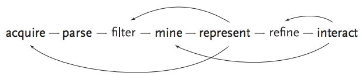

We’re almost through Ben Fry’s data visualization process!
Add methods for manipulating the data or controlling which features are visible.
This is where your new-found mastery
of HTML and JavaScript comes in.
Browsers give us some simple tools for
interactivity without the need for scripting:
title attribute and SVG <title>:hover styles to show and hideWe can also use event handlers to respond to interaction
in JavaScript. D3 has support for event handlers built in:
d3.selectAll(".agency")
.on("mouseover", function(d) {
console.log("mouseover:", d);
})
.on("click", function(d) {
console.log("click:", d);
});
In D3 event handlers, the callback function gets the
bound data as its first argument, not the event object.
(The event object is accessible via d3.event.)
mouseoverclick, update the contents of another elementchange eventsTransitions are a great way to help the viewer perceive
changes in your visualization. They’re built into D3:
// create a function to set attributes on a selection
function updatePosition(selection) {
selection
.attr("cx", function(d) { ... })
.attr("cy", function(d) { ... });
}
// updates immediately
var circles = svg.selectAll("circle")
.call(updatePosition);
// transitions each attribute from its current to new values
circles.transition()
.duration(1000) // 1 second, or 1,000 milliseconds
.call(updatePosition);
D3 also gives us some other cool tools right out of the box:
Geographic mapping shares a lot concepts
with other abstract visualizations.
A pre-flight checklist:
mouseover, etc. will notRemember that the S in SVG stands for “scalable”.
var width = 800,
height = 600,
svg = d3.select("svg")
.style("width", "100%")
.attr("viewBox", [0, 0, width, height].join(" ")),
aspect = width / height;
// this is a lazy way to add an event listener
window.onresize = function() {
var actualWidth = svg.property("offsetWidth"),
actualHeight = actualWidth / aspect;
svg.style("height", Math.ceil(height) + "px");
};
// call the function once to get things rolling
window.onresize();
Let’s make some stuff.